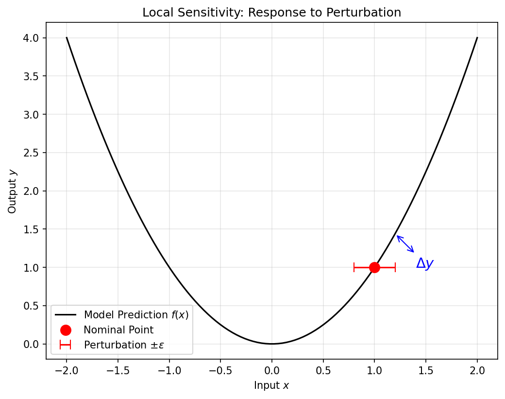
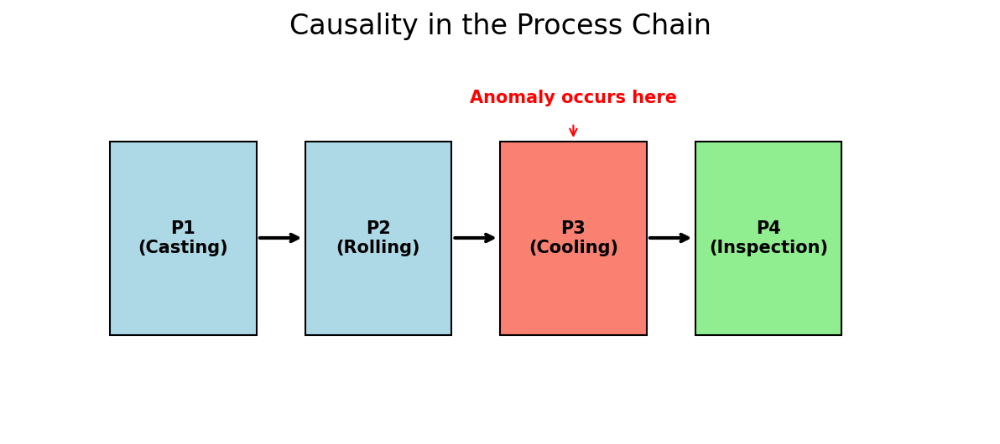

Machine Learning for Characterization and Processing
Unit 14: Integration, limits, and reflection
AI 4 Materials / KI-Materialtechnologie
01. The AI-Driven Materials Scientist
- Final Recap: From atoms to bits, and back to materials discovery.
- We’ve covered:
- Modalities & Physics (Week 2).
- Pipeline Integrity (Week 3).
- Deep Learning (Weeks 5-7).
- Physics-Informed Models (Week 13).
- Goal: Reflecting on the “Why” and “What’s Next”.
02. Opening the Black Box: Explainability
- In engineering, knowing “what” will happen is not enough.
- Trust: An operator won’t stop a machine because a model said “99% error” without a reason.
- Explainability: Providing human-interpretable evidence for a model’s decision.

03. Sensitivity Analysis (Neuer Ch 7.2)
- Local Perturbation:
- Input: \(x_i\).
- Disturb: \(x_i + \epsilon\).
- Measure: \(\Delta y\).
- If a \(1^\circ\)C change in temperature leads to a 50% change in prediction, the model is either very insightful or very brittle.

04. Global Explanations: SHAP and LIME
- SHAP (Shapley Additive Explanations): Based on game theory.
- Quantifies the “fair share” of each feature toward the final prediction.
- Materials Use: Identifying which chemical element is the primary driver of corrosion resistance in a high-entropy alloy.
05. Causality in the Process Chain
- Correlation != Causality (Recap from Week 1).
- Causal Process Chain:
- Anomaly detected at Step 10.
- Cause originated at Step 2.
- Prediction vs. Detection: AI must move earlier in the chain to allow for intervention (Neuer Ch 7.3.3).

06. Materials Ontologies: Digitizing Meaning
- Does the computer know what “Quenching” means?
- Ontology: A semantic map of materials concepts.
- By connecting “Cooling Rate” to “Dislocation Density”, we help the algorithm “reason” like a metallurgist.

07. The Limits of AI in Materials
- Data Bias: Models are only as good as the history they’ve seen.
- Success Bias: Negative experimental results are rarely published, so AI is blind to failure modes.
- Physical Hallucinations: Large models can produce patterns that look plausible but violate thermodynamics.
08. The Ethical Cost of AI
- Training massive models consumes energy.
- In scientific ML, Efficiency is an ethical requirement.
- PINNs (Week 13) are more data-efficient and environmentally “greener” than brute-force NNs.
09. The Role of the Expert in 2030
- AI handles the Tedious: Peak picking, segmentation, data cleaning.
- AI explores the Vast: 10-dimensional process maps.
- The Human handles the Question: What material do we need to solve the climate crisis?
- The Human handles the Interpretation: Does this discovery make physical sense?
10. Conclusion: AI 4 Materials
- AI is not a replacement for domain knowledge; it is an amplifier.
- Your greatest asset is your ability to bridge the gap between physics and the algorithm.
- Final Thought: The best models are those that work in the lab, not just on a benchmark.
11. Recap: Unit 14
- Explainability builds engineering trust.
- Causality is the engine of discovery.
- Be aware of the limits: data bias and hallucinations.
- Next: Your mini-projects and the final exam!
12. References & Further Reading
- Neuer (2024): Ch. 7 (Explainability and Semantics)
- Sandfeld (2024): Ch. 1 (Materials Data Science)
- McClarren (2021): Ch. 10 (Future Directions)